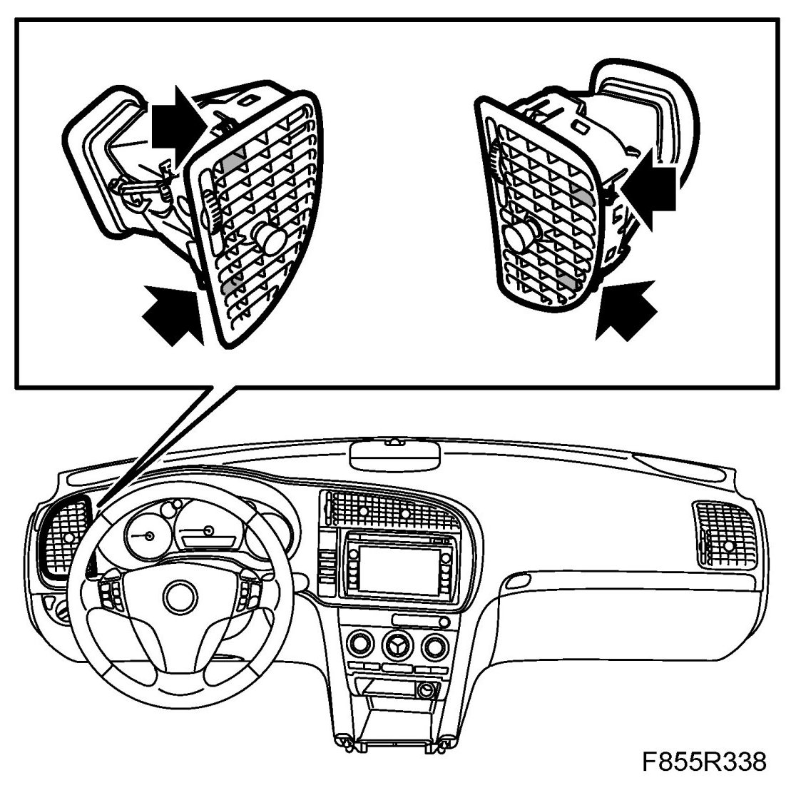
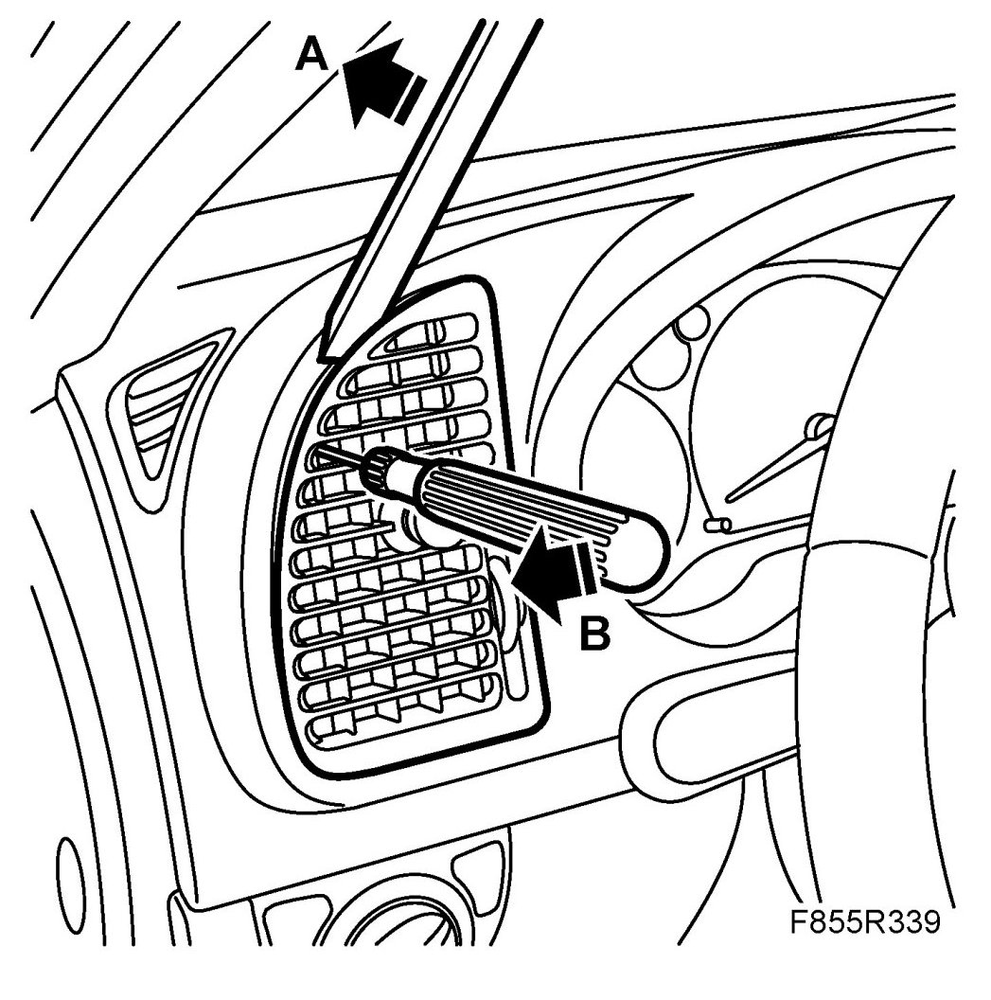
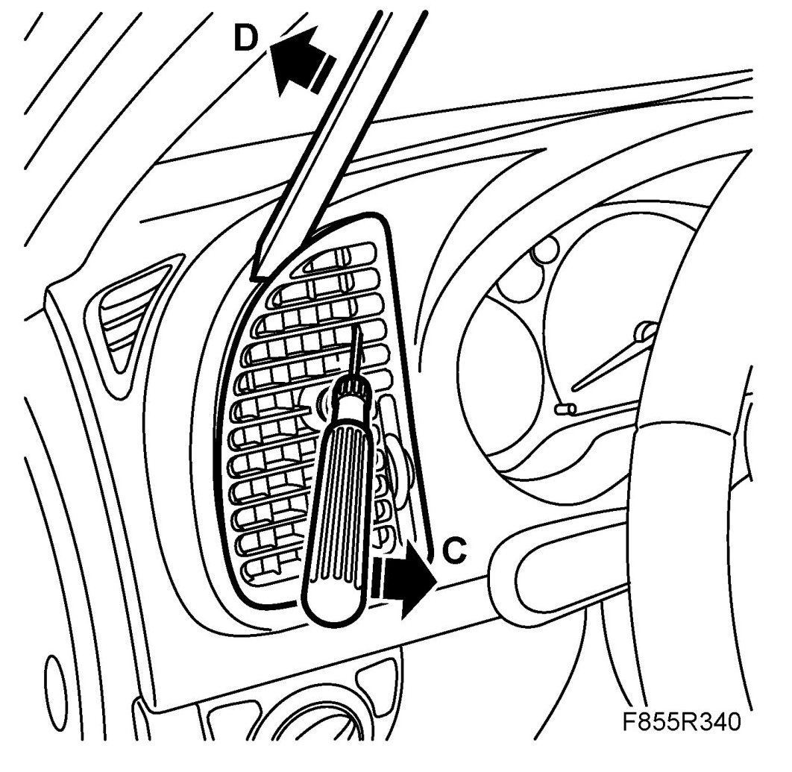
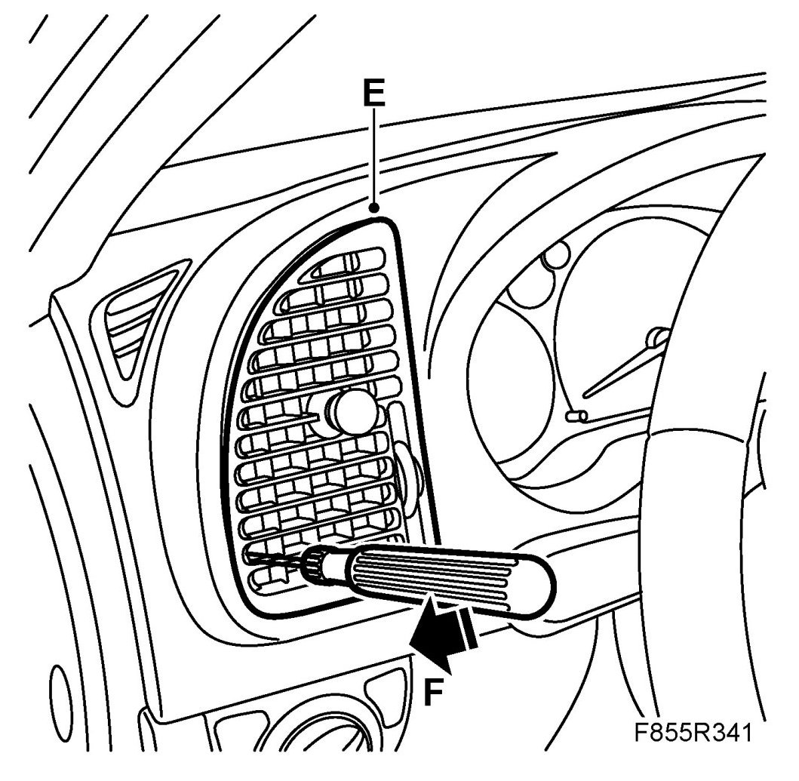
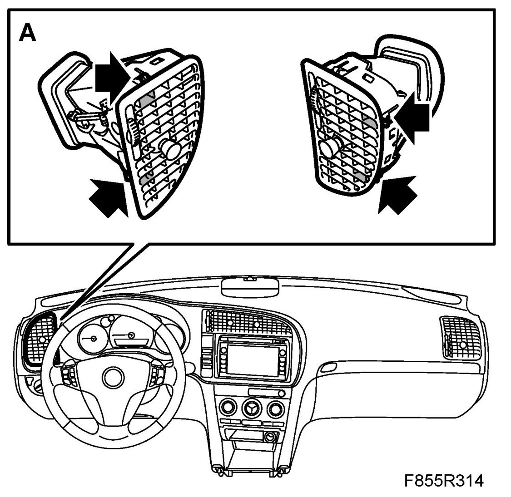

Air Vent, Panel, Driver
Air Vent, Panel, Driver
To remove
1. Remove the air vent as follows:
IMPORTANT: To prevent the vents from breaking, never pull the adjusting buttons. Make sure that the correct catches are bent in. The catches which hold together the vents can also be seen through the grille.

- Carefully press in 82 93 474 Removal tool between panel and air vent so that the air vent is tensioned.
- Carefully prize up one of the air grille's clips by inserting a small screwdriver approx. 15 mm into the fourth grille row from the top (A). Carefully prize in the screwdriver while at the same time maintaining the pressure with the removal tool (B).

- When the air vent has loosened slightly, insert the screwdriver into the other side to detach the opposite clip in the air vent (C). Carefully prize in the screwdriver while at the same time maintaining the pressure with the removal tool (D).

- Grip the edges of the air vent (E) and detach the third lower clip by inserting the screwdriver into the second hole from the bottom (F). Prize in the screwdriver and at the same time pull out the air vent.

To fit
1. Position the driver's air vent and clip into place (A). Ensure that the lugs are properly engaged.
